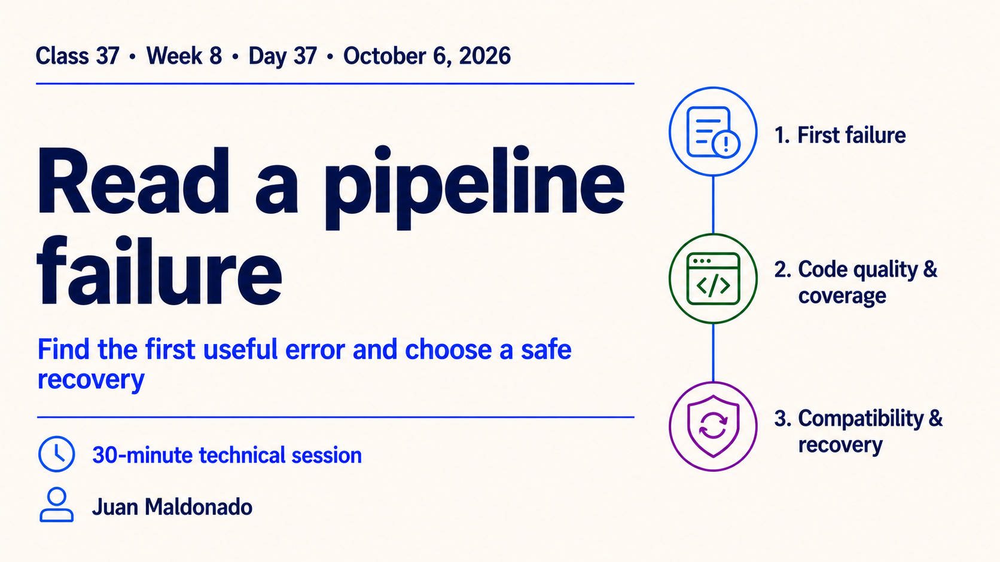
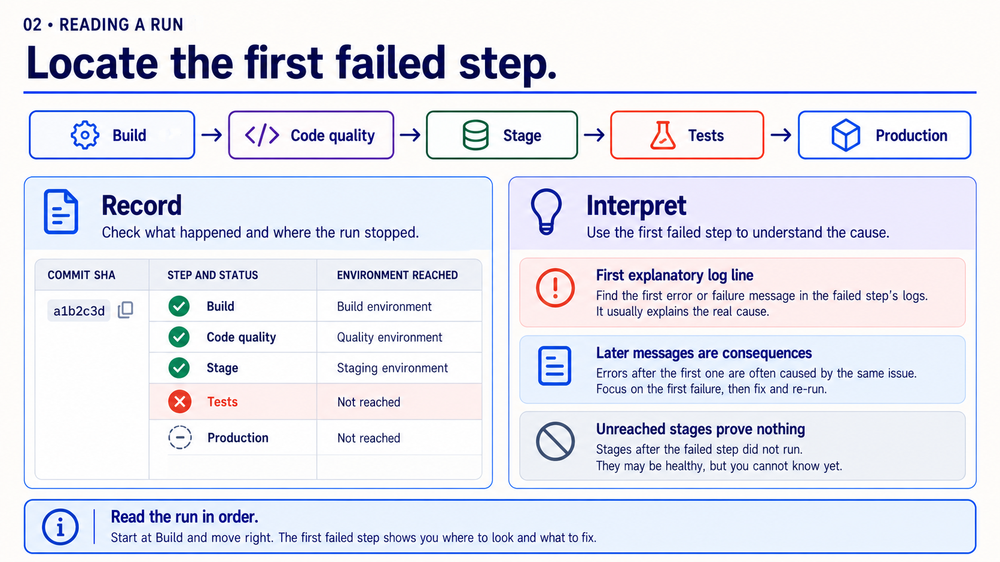
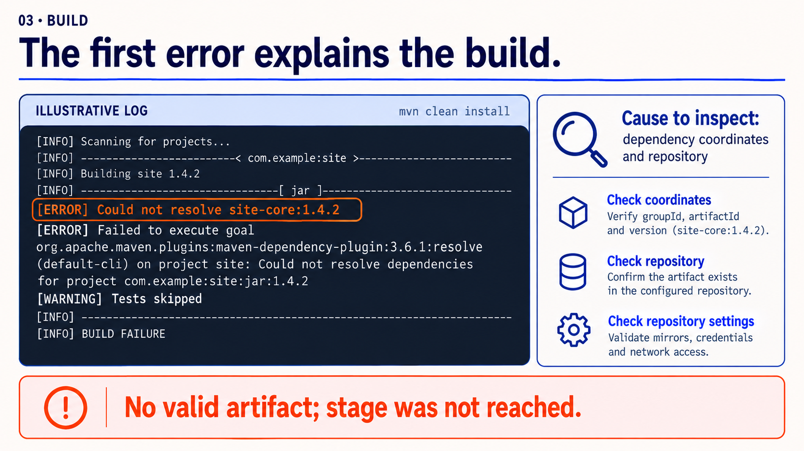
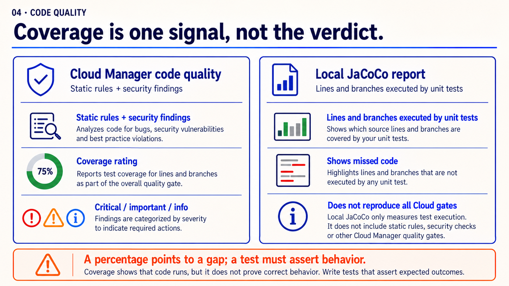
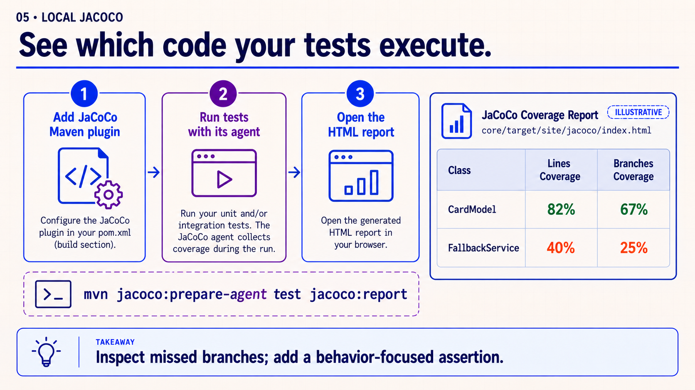
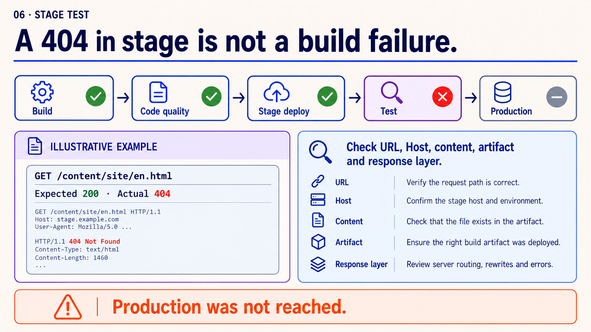
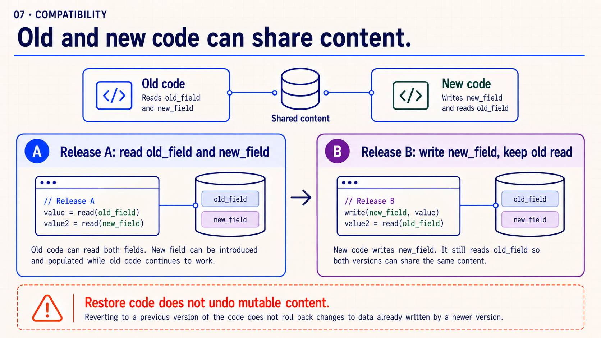
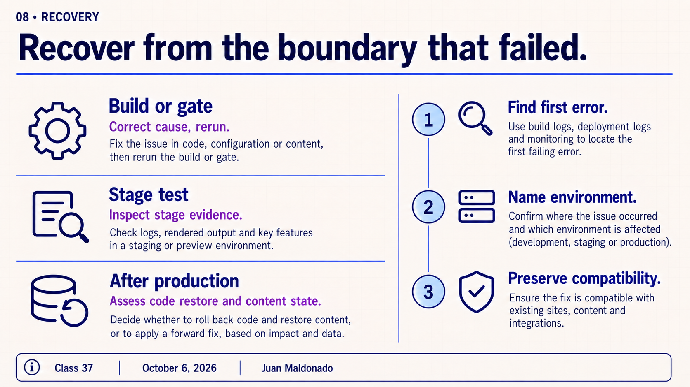
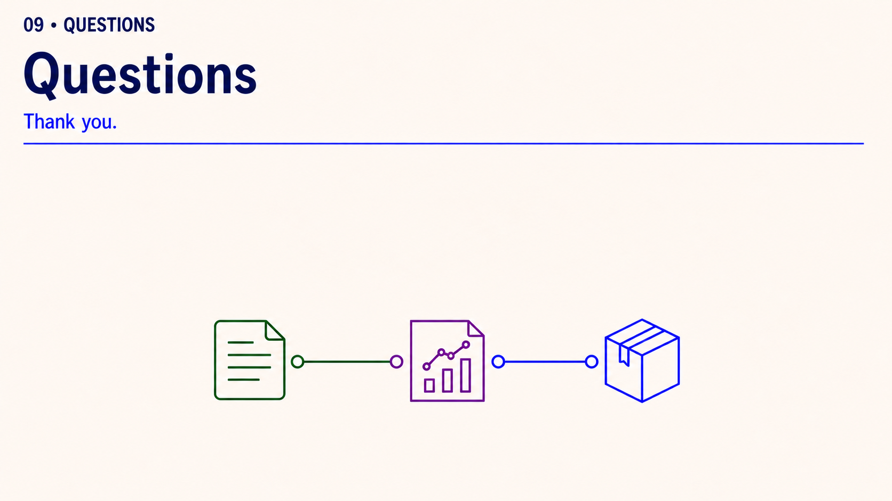

30-minute agenda
| Time | Slides | Focus |
|---|---|---|
| 0–6 | 1–2 | Find the first failed step. |
| 6–11 | 3 | Read the first build error. |
| 11–20 | 4–5 | Connect code quality to local JaCoCo coverage. |
| 20–25 | 6 | Interpret a fictional stage-test failure. |
| 25–28 | 7–8 | Explain compatibility and recovery. |
| 28–30 | 9 | Questions and closing. |
The Spanish study guide includes a Maven JaCoCo configuration and one local command. Local coverage helps explain a quality signal; it does not reproduce every Cloud Manager gate. The actual pipeline steps depend on type and configuration.
Complete slide deck
Copy each PNG to PowerPoint or download it below.















